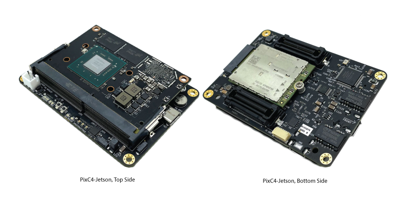

Horizon31 PixC4-Jetson¶
The PixC4-Jetson is a professional-quality and NDAA Compliant Flight Management Unit (FMU), powerful single board computer and peripheral support system (USB, MIPI, Ethernet, M.2 slot, etc.) in a small form factor, designed to be integrated into end-user platforms. The term “PixC4” is derived from the Pixhawk, on which the FMU design is based (FMUv5) and C4, representing Command, Control, Compute and Communication.
Available as a turnkey solution including software pre-flashed on the Nvidia Jetson companion computer to enable the following features:
UDP Unicast/Multicast/Broadcast Telemetry (MAVLink)
LTE connection management with Layer-2 peer to peer VPN
Powerful multi-endpoint video encoding pipelines with example/open-source scripts for customization
ATAK Integration
Web interface for configuration and remote terminal access
Supports multiple simultaneous communication pathways such as LOS, LTE and Satcom with advanced stale command rejection and message deduplication
Scalable and secure cloud connectivity to Horizon31’s US servers and optional access to their cloud GCS and low-latency webRTC video distribution system (https://gcs.horizon31.com)
Specifications¶
STM32H743 Processor with STM32F103 IO Processor (FMUv5 design)
Integrated Nvidia Jetson companion computer, compatible with Nvidia Jetson Nano, Xavier NX or TX2 NX
Ethernet switch (3 port)
USB 2.0 Hub (7 port)
Cellular/LTE Modem support (M.2. Key B slot)
Support for RockBlock 9603 Iridium Modem
F-RAM Cypress MF25V02A-DG 256-Kbit nonvolatile memory (Flash memory that performs as fast as RAM)
Invensense ICM-20602 (x2) 3-axis accelerometer/gyroscope
Invensense ICM-42688 3-axis accelerometer/gyroscope/magnetometer
MS5611 barometer
RM3100 Compass
Micro SD Card for FMU
Nano SIM card slot for M.2 cellular Modem
Board to board connector with the following IO:
Spektrum DSM / DSM2 / DSM-X® Satellite compatible input and binding (FMU)
Futaba S.BUS® & S.BUS2® compatible input (FMU)
1x Telemetry port output (FMU)
PPM sum input signal (FMU)
14x PWM outputs (6 DShot capable) (FMU)
1x RSSI (PWM or voltage) input (FMU)
2x I2C (FMU)
1x UART (FMU)
1x SPI (FMU)
2x CAN (FMU)
Voltage/Current Sense (FMU)
Safety Switch (FMU)
Buzzer Out (FMU)
Jetson UART/Console (Jetson)
MIPI/CSI (Jetson)
UART (Jetson)
I2S (Jetson)
I2C x2 (Jetson)
GPIO x5 (Jetson)
Ethernet (x2) 100 Mbps (Jetson)
USB 2.0 (x4) (Jetson)
Power Input (5V, ~2-5A depending on compute module used). Accepts redundant/separate supplies for FMU and Jetson.
Other IO:
JTAG for FMU and IO
USB 3.0 SS Type C (Jetson)
USB 2.0 Type C (FMU)
Jetson Fan Control
M.2 Key B Connector
FMU and IO RGB LED, Ethernet status LEDs, Power LEDs
Weight and Dimensions¶
Weight: 33g (without heatsink)
Width: 59mm
Length: 83mm
More Information¶
Pinouts, wiring diagrams, setup information and more documentation is available here:
Where to Buy¶
Horizon31 Made in the USA
[copywiki destination=”plane,copter,rover,blimp”]